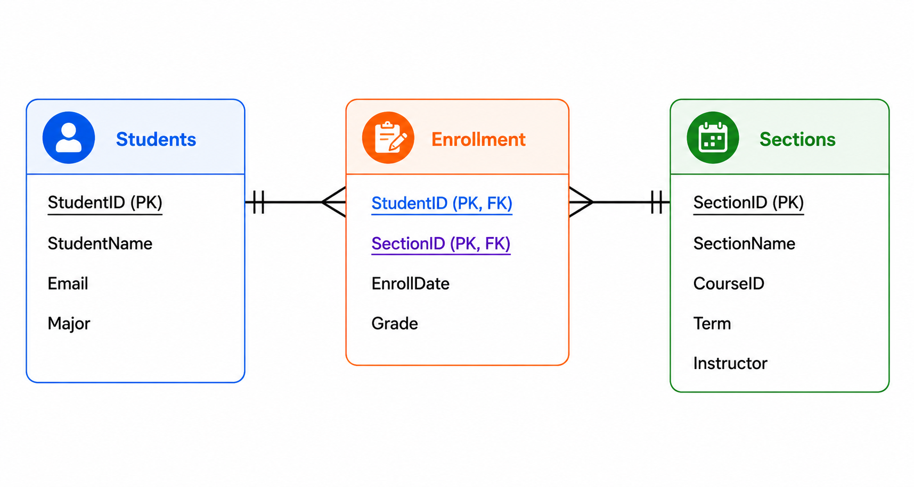
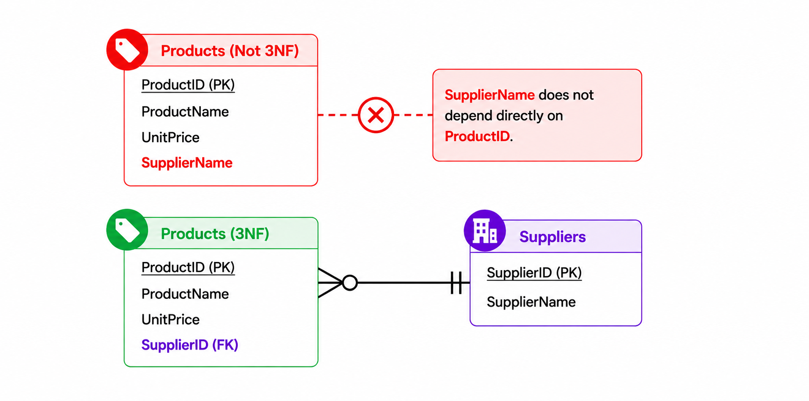

Normalization
Once the entities and relationships have been modeled, the next question is whether the attributes are organized appropriately within the tables. Normalization is a set of database design rules used to reduce unnecessary redundancy, prevent data anomalies, and make a database easier to maintain. It organizes data into smaller, well-structured tables, with each table representing facts that belong together.
Normalization is not simply about making tables smaller. It is about storing each fact in the appropriate place so that the database can be updated without creating contradictions or losing important information. The normal forms build on one another: a table must meet the requirements of the earlier normal forms before it can satisfy a later one.
Comprehension Check 1 of 5
Functional Dependencies
Normalization begins by understanding functional dependencies. A functional dependency exists when one attribute, or a combination of attributes, determines the value of another attribute. In other words, knowing the determinant tells us which value belongs to the dependent attribute.
For example, a ProductID determines the product name and price because each ProductID identifies one specific product. In an OrderItems table, the combination of OrderID and ProductID determines the quantity ordered. Identifying these dependencies helps decide which attributes belong in each table and whether a table should be divided.
Comprehension Check 2 of 5
First Normal Form (1NF)
First Normal Form requires a table to have a primary key and to store a single, atomic value in each cell rather than a list of values or repeating groups. Each row should represent one instance of the table’s subject, and each column should hold one kind of attribute.
Imagine a customer record with a PhoneNumbers field containing “208-555-0123, 208-555-0188.” The field contains multiple phone numbers in one cell, which makes searching, sorting, and updating individual numbers difficult. A better design stores each phone number as a separate value in its own row in a related CustomerPhone table, or uses another structure appropriate to the business rules. The important idea is that a cell should not contain a list of separate values.
Comprehension Check 3 of 5
Second Normal Form (2NF)
Second Normal Form addresses tables that use a composite primary key. A table must first satisfy 1NF, and every non-key attribute must depend on the entire composite key—not just one part of it. This is called full functional dependency. If a table has a single-column primary key and already satisfies 1NF, it is automatically in 2NF because there is no partial dependency on part of a composite key.
Consider an OrderItems table with a composite key made from OrderID and ProductID. Quantity depends on both values because it describes how many units of a particular product appear on a particular order. ProductName, however, depends only on ProductID. Storing ProductName in OrderItems would repeat the same product name across many orders. Product details belong in the Products table, while the OrderItems table stores facts about the specific order-product relationship.
The same principle applies to student enrollment. A student can enroll in many sections, and each section can contain many students. The grade belongs to the specific student-section enrollment, not to the student alone or the section alone. Each student will have a grade for a section of that course. The combination of StudentID and SectionID identifies the enrollment and determines the grade.

Comprehension Check 4 of 5
Third Normal Form (3NF)
Third Normal Form builds on 1NF and 2NF. A table is in 3NF when its non-key attributes depend on the key, the whole key, and nothing but the key. In practical terms, a non-key attribute should depend on the primary key rather than on another non-key attribute. This prevents transitive dependencies, where one non-key attribute determines another.
For example, suppose a Products table contains ProductID, ProductName, SupplierID, and SupplierName. ProductID determines SupplierID, and SupplierID determines SupplierName. That means SupplierName depends on SupplierID rather than directly on ProductID. If a supplier provides many products, the supplier name would be repeated in many product rows. Instead, store supplier details in a separate Suppliers table and keep SupplierID as a foreign key in Products. Each supplier can provide many products, while each product is associated with one supplier under this business rule.

Comprehension Check 5 of 5
Why Normalization Matters
Normalization helps prevent common database problems. Without it, changing one fact may require updates in many places, a new record may be difficult to insert without unrelated information, or deleting one record may accidentally remove another fact the organization needs. These are known as update, insertion, and deletion anomalies.
Applying 1NF, 2NF, and 3NF helps place facts in the correct tables and reduces those risks. The result is a database that is easier to maintain and more dependable as information is added, changed, and retrieved. Normalization is a design discipline, not a one-time cleanup task: the model should be reviewed against the real business rules as the system evolves.
Using AI to Support Relational Modeling and Normalization
AI can help turn written business requirements into a preliminary list of entities, attributes, primary keys, foreign keys, and relationships. A useful prompt describes the system, identifies the business rules, requests cardinality or relationships, checks normalization, and asks for an ERD or a structured explanation of the design. For example, an analyst might ask AI to model customers, orders, products, and order items based on a set of purchasing requirements.
AI-generated models should be treated as proposals, not finished designs. The analyst must check whether every entity represents a meaningful concept, whether attributes belong to the correct entity, whether relationships reflect the business rules, and whether many-to-many relationships have been resolved appropriately. A model that looks plausible can still omit an important business rule or assign the wrong cardinality.
Prompt design is most useful when it supports a repeatable workflow. Provide context, the available requirements, the expected output, and evaluation criteria. Then compare the result with the original requirements and revise it before implementation. AI can accelerate the first draft, but the designer remains accountable for the final model.
Chapter Completion
Answer all five comprehension questions, then check your work.
Chapter complete
Copy or write down this access code. You will need it later in class to receive your points.
normalization-data